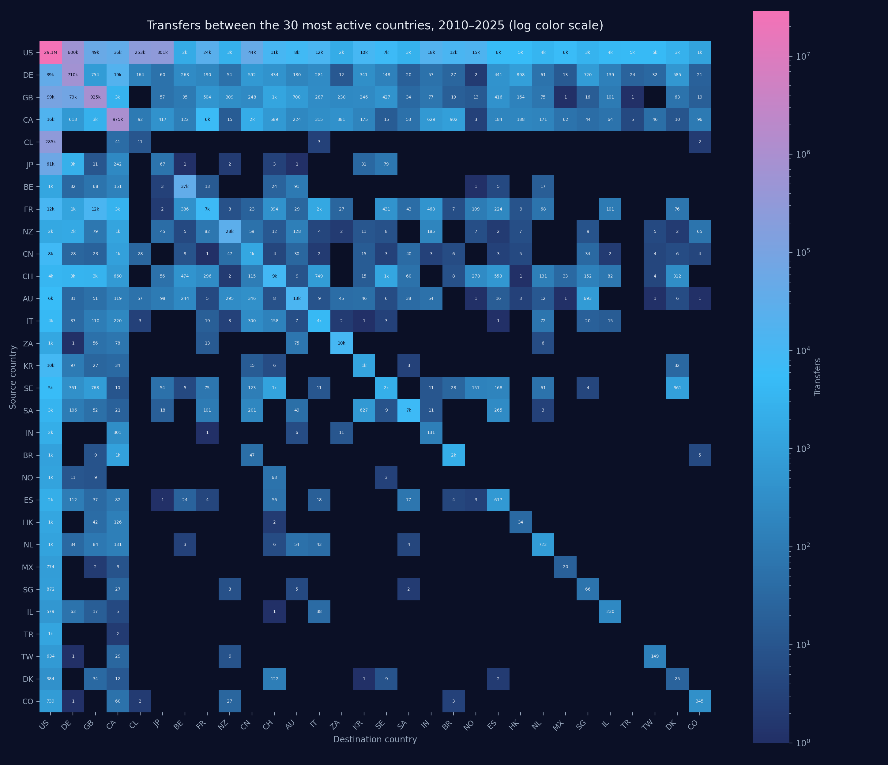
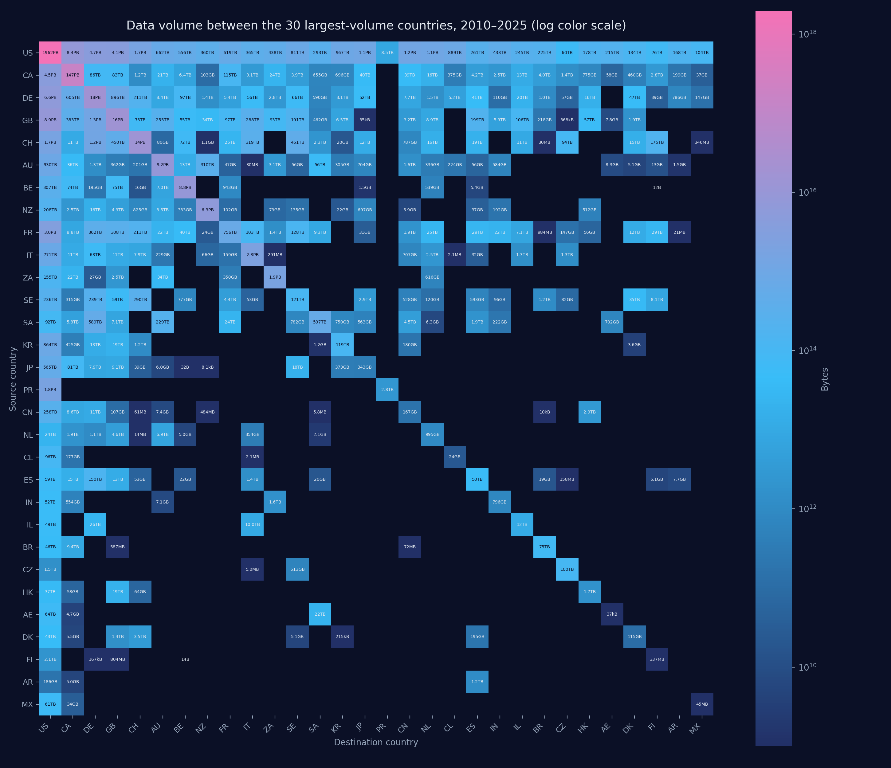
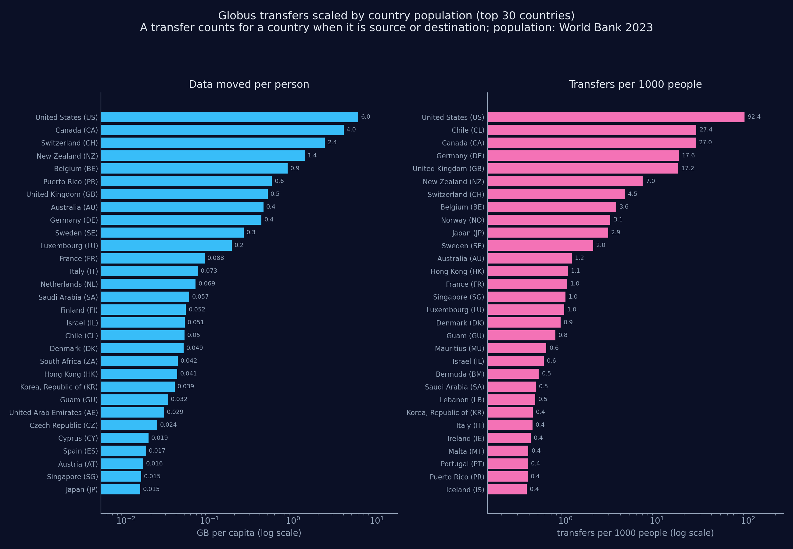

Fifteen years of research data on the move — loading….
Click a country on the map (or a card below) to watch its transfers unfold, month by month,
as points of transfer size vs. distance and routes on the globe.
0
Transfers
0
Moved
0
Countries
Countries shaded by total data volume moved (log scale). Brighter = more bytes.
The Numbers Behind the Maps
Fifteen years of transfers, summed up: who exchanges data with whom, and who
moves the most for their size. Click a figure to enlarge.

Number of transfers between the 30 most active countries, source to
destination (log color scale). The diagonal is within-country traffic.

Data volume moved between the 30 largest-volume countries (log color
scale). Rankings shift versus transfer counts: a few very large datasets can
outweigh millions of small transfers.

Transfers scaled by population: gigabytes moved per person and transfers
per 1000 people (World Bank 2023 populations, log scales).